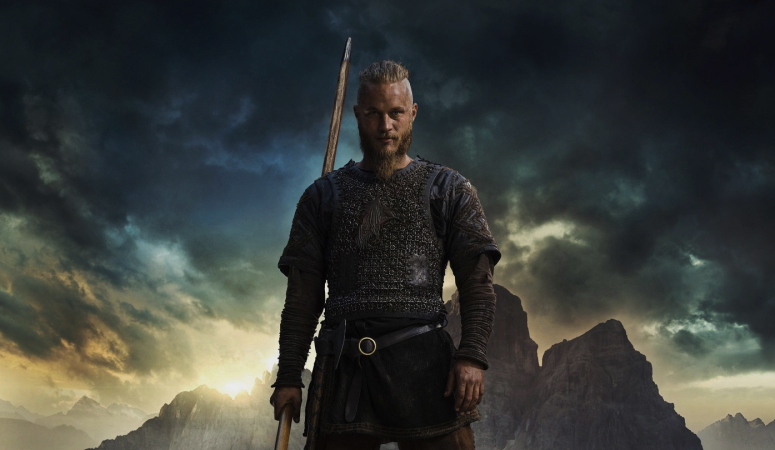
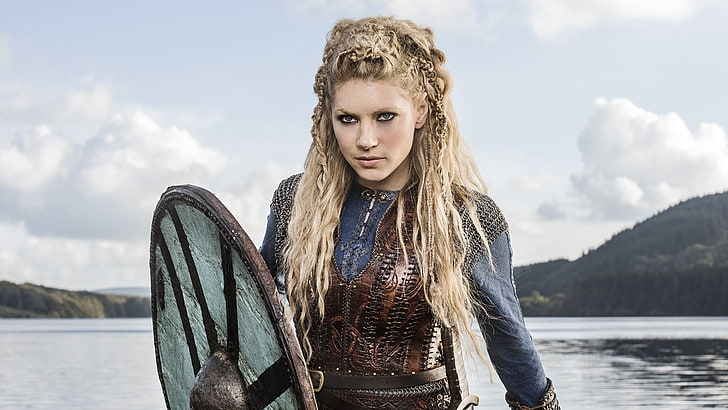
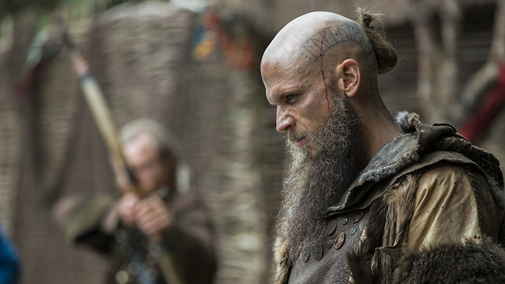
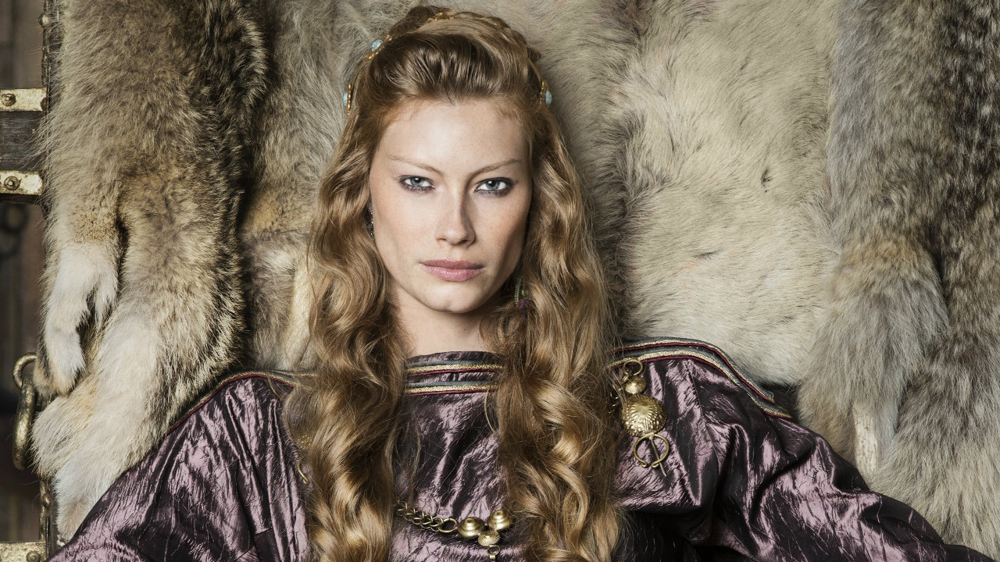

Рагнар
Рагнар Лодброк (др.-сканд. Ragnarr Loðbrók) - напівлегендарний скандинавський конунг з роду Інглінгів, ключовий персонаж серіалу.
Вмілий воїн і амбітний вождь, Рагнар протягом майже всього свого життя йде шляхом вікінга. Розсікаючи море в пошуках бойової слави і наживи, він прагне знайти нові знання, відкрити невідомі землі і змінити нелегку долю свого народу, що живе в суворих умовах Скандинавського півострова
Лагерта
Лагерта (або Хладгерда, др.-сканді. Hlaðgerðr, лат. Ladgerda, Ladgertha або Lagertha; в серіалі також носить псевдонім Інгстад) - відома скандинавська войовниця, згадана в хроніках Саксона Граматика, перша дружина датського морського конунга Рагнара Лодброка.
Своєму першому чоловіку Лагерта дарує двох дітей: сина Бйорна і дочку Гіду. Любов Рагнар і Лагерта починає руйнуватися, коли Гіда гине від епідемії, а третя дитина народжується мертвою. Коли в будинок Рагнара приходить вагітна від нього Аслауг, Лагерта розриває шлюб і разом з Бйoрном відправляється в Хедебю, де виходить заміж за жорстокого ярла Сігварда. Убивши нелюбого чоловіка, войовниця займає його трон. Ставши ярлом, вона залишається вірною подругою Рагнара Лодброка, беручи участь в очолюваних ним походах.
Ролло
Ролло (або Хрольф, др.-сканд. Hrólfr, лат. Rollo, історичний прототип також відомий під іменами Роллон, Рольф і Роберт I) - відомий вождь вікінгів, перший герцог Нормандський, засновник Нормандської династії
Безуспішні спроби піднятися на тлі впливового і щасливого брата призводять Ролло до запеклої внутрішньої боротьби, яка робить його нещасним і змушує шукати шляхи виходу з кризи. В кінцевому рахунку Ролло відвертається від свого народу, приймає християнство і переходить на сторону Західно-Франкської держави, посівши високе положення при дворі імператора Карла.
Флокі
Флóкі (др.-сканд. Flóki) - скандинавський кораблебудівник, активно бере участь в грабіжницьких набігах вікінгів на країни Європи.
В ході розвитку сюжету Флокі ініціює або виявляється залучений у безліч інтриг, пов'язаних з будинком Лодброка. Відсторонившись від воєн і політики, він відкриває острів, який пізніше отримав назву Ісландія і став важливою скандинавською колонією, а в подальшому - незалежною державою.
Аслауг
Áслауг (др.-сканд. Áslaug Sigurðardóttir, також відома під іменами Аслёуг, Крака ( «Ворона») і Краба) - напівлегендарна скандинавська дроттнінг, згадувана в ряді середньовічних саг. У серіалі - гетска аристократка, друга дружина Рагнара Лодброка і правителька Каттегату.
Мати знаменитих скандинавських вождів - Уббе, Хвітсерка, Сигурда Змієокого та Івара Безкосного, народжених від Рагнара. Найбільшу любов Аслауг відчуває до молодшого сина, збитковий з народження Івару. Цей факт значно впливає на вчинки самої матері та її змужнілого сина.